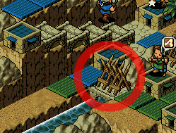
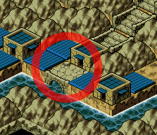
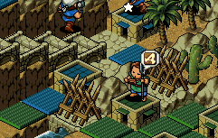
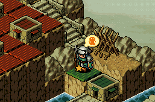
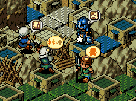
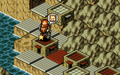

| 概要 | 情報 | ステージ攻略 |
| 地図 | テクニック | モナモナ攻略へ |
| スタート直後に約5000$ を使用します。そのため、ゲームをいったん開始して家から生まれてきたユニットをほぼ全員待機させてください。  家から生まれてきたユニットのうち数名を、上の画像で丸が付いた位置に橋を作ってください。 作った後、すぐに青国のユニットと衝突するので体重は500g 程度欲しいものです。  その後、上の画像の丸の位置に橋を作ってください。橋を作ったユニットはすぐに自国に戻るように指示してください。  ユニットが戻ってきたら、上の画像のように二カ所に柵を作ってください。そして、もしもの時に備え、ユニットを一体待機させてそれ以外に領土拡張を指示してください。  赤国の領土の方へ進んだユニットは、約2000g ずつ上の画像のように待機させてください。また、ある程度領土を広げたら税率を上げ、資金を集めてください。  しばらくすると青国の大将が柵を壊し、自国に攻め込もうとします。柵を壊されたらすぐ作り、また壊されたらすぐに作りを繰り返し、青国の体重を削ります。そして、青国の大将が2500g 程度になったら、待機させて置いた2000g 級ユニット2体を合体させ、青国の大将を追い返してください。  追い返されたユニットはうまくいけば白国の大将と衝突します。その後、どちらの大将がどうなっても知りません。 そのころ、上の画像のように赤国の大将が白国へと侵攻していきます。赤国の大将が白国の城下に移動したら、自国のユニットを赤国の城下へ侵攻します。 赤国の城を壊し、王様を倒した頃、赤国の大将が白国城下の大部分を制圧していればベストです。 後は白国の城下をキレイに制圧してください。 |
| 概要 | 情報 | ステージ攻略 |
| 地図 | テクニック | モナモナ攻略へ |